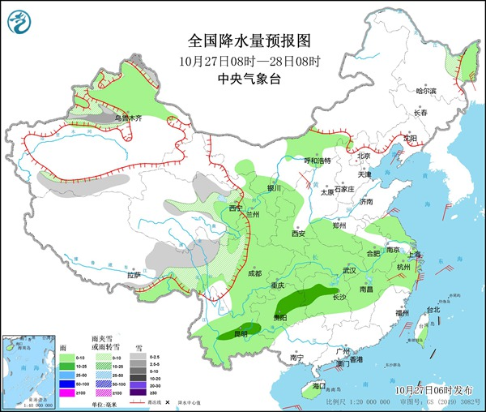
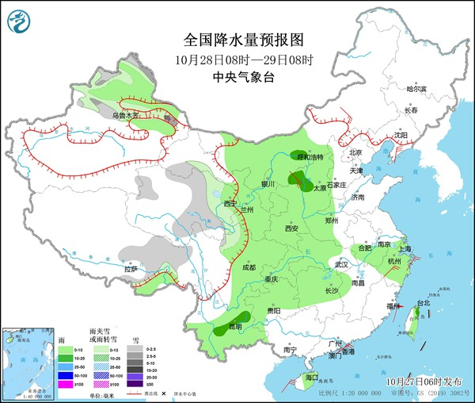

中国天气网讯 今明两天（10月27日至28日），冷空气继续>影响北方地区，新疆北疆地区局部降温超10℃，并伴有4～6级风，寒凉加重，公众需注意防寒保暖。 在南方，大范围降水天气过程正铺展开来，贵州至江南北部降雨增多，有利于缓和当地旱情。
昨天，青藏高原雨雪强度有所减弱并逐渐停止，与此同时，大范围降水向东扩展。 监测显示，昨天08时至今天06时，江苏南部、湖南西北部、贵州北部、云南西部、西藏东部等地部分地区出现中雨、局地大雨。
今明两天，西北地区东部、西南地区东部至长江中下游地区降雨仍将持续，以稳定性降雨为主，量级普遍为小到中雨。
中央气象台预计，今天，新疆北疆北部、沿天山地区和南疆南部、西藏东部、青海东北部、川西高原北部等地部分地区有小到中雪或雨夹雪，局地大雪。 黑龙江东北部、内蒙古中部、新疆北部、西北地区东部、黄淮西部、江淮大部、江汉、江南大部、西南地区大部、海南岛等地部分地区有小雨， 其中，湖南北部、贵州东北部和中部、云南中部等地部分地区有中雨。

明天，新疆北疆北部和沿天山地区、西藏东部、青海中东部、甘肃河西、川西高原北部等地部分地区有小雪或雨夹雪，局地有中到大雪。内蒙古西部、新疆北部、西北地区东部、华北西部、黄淮西部、江汉大部、江南北部和西部、 西南地区大部、海南岛、台湾岛东部等地部分地区有小到中雨。

7月下旬以来，江南多地持续干旱少雨，虽然这轮降水过程持续时间不长，但有利于缓解湖南中北部、贵州北部等地的旱情。江南中北部虽然降水较弱，但未来几天天空云量较多，具备有利的人工增雨作业条件。 而在江南南部，未来十天仍无有效降水，气象干旱还将持续或发展，建议当地居民节约用水，注意家居用火用电安全。
眼下一股冷空气正在影响我国北方地区，今天05时较昨天05时，内蒙古东部、河北北部、东北地区西部降温6～10℃，内蒙古赤峰等局地降幅12～18℃。
今明两天，受冷空气影响，新疆北疆地区将出现雨雪和大风降温天气。预计，北疆地区将有4～8℃降温，局地降温幅度超过10℃，并伴有4～6级风。
北方多地今明两天气温将降至近期最低点，华北、西北地区东部最高气温将降至15℃左右，东北大部地区在10℃上下。城市中， 今天北京最高气温14℃、石家庄仅有13℃，或创今年下半年来新低，阴冷感突出，公众需及时添衣保暖，谨防感冒和心脑血管疾病。